Тест-драйв Peugeot 5008: найкраща капсула-антистрес для великої сім'ї
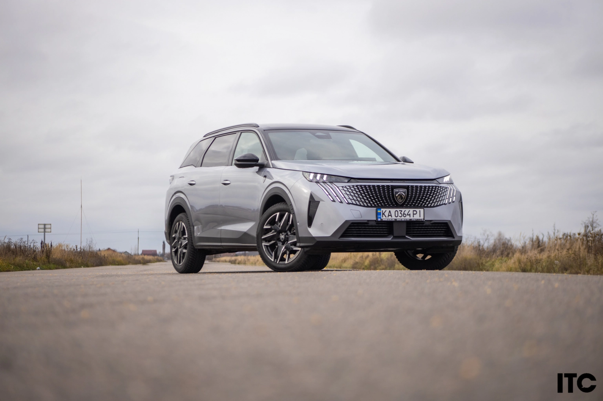Здається, що цей автомобіль створено, щоб дивувати тих, для кого слово “Peugeot” залишалося чимось далеким та загадковим. Великий SUV Peugeot 5008 не тільки отримав свіжі технічні навички, але і став куди цікавішим у керуванні.
У світі автомобільної журналістики зараз панує трохи істеричний тренд. Вся Європа наче сказилась на поклику екології, автовиробники захлинаючись розповідають про кіловати, запас ходу та екологічні сертифікати, від яких у звичайної людини починає сіпатись око. Французи запускають новий E-5008, який важить як невеликий танк через батареї та збереження його класу сімейного кросс-вена.
Але ми в Україні. І у нас тут свої реалії, де “запас ходу” вимірюється не розетками, а надійністю каністри та впевненістю, що машина заведеться і поїде будь-куди та будь-коли. Тому, коли мені випала нагода протестувати Peugeot 5008 2025 модельного року в комплектації GT, я видихнула з полегшенням. Це той самий оновлений красень, який ми знаємо, але з серцем, що б’ється на бензині, а не на мікросхемах.
І мені здається, що це не просто тест-драйв, а наче прощання з епохою справжніх механічних відчуттів, загорнутих у французький шик. Ніяких дизелів більше не буде, а електро потужність та економічність гібридів для нас поки що або дорого, або не практично. І добре, що все ще є старі добрі бензинові двигуни, які ще й в плані пробігу будуть куди надійніше за своїх екологічних побратимів.
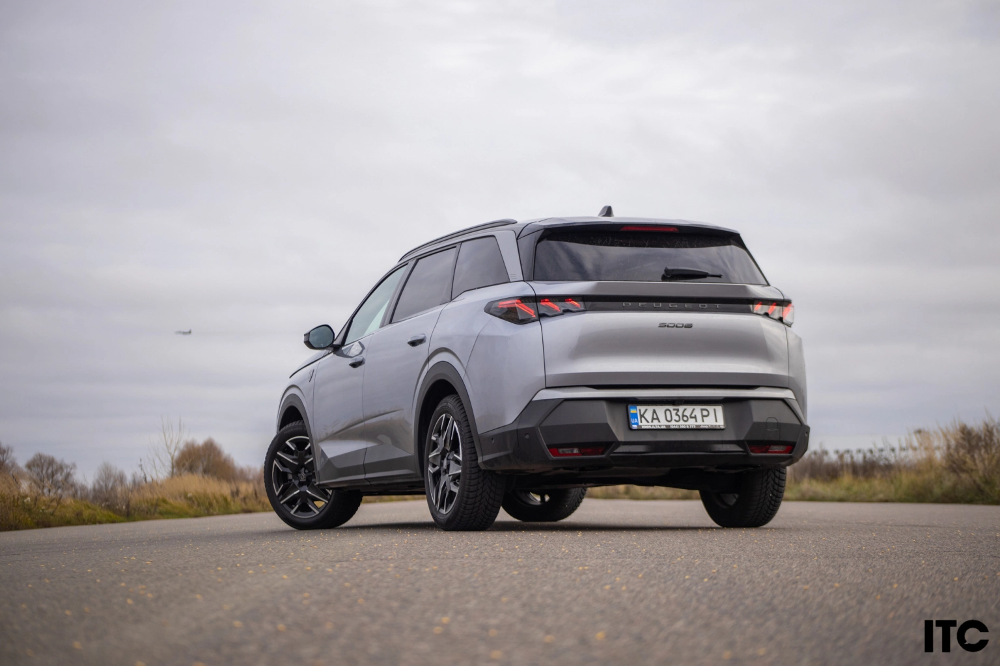Peugeot 5008 знає, як справити враження
Коли я підходжу до Peugeot 5008 на парковці, він виглядає наче дорого вдягнений чоловік, який не кричить про свої гроші, але ви це і так бачите. Колір глибокий сірий, дах у кольорі Black Diamond – це фішка комплектації GT. А передня частина – це взагалі витвір мистецтва. Безрамкова решітка радіатора, яка ніби розчиняється в бампері, і ці світлодіодні «ікла» денних ходових вогнів. Це не просто дизайн, це характер.
На дорозі тебе не те що поважають, а просто заворожено слідкують поглядами. Коли в дзеркалі заднього виду хтось бачить цей хижий погляд, смугу звільняють швидше, ніж перед «Геліком». Перевірено в ранкових заторах на Харківському масиві та в лівій смузі бориспільської автостради.
Цікаво, що не менш захопливо слідують за його кормою, де левова частка хижого дизайну повторюється з не менш яскравими рисами. Діодні смуги в ліхтарях, чорні вставки зі стильним написом 5008, покатий дах. Ніщо не каже про величність в розмірах, які сягають 2901 міліметрів в колісній базі та 4791 міліметр в довжину. І у нашого бензинового кросовера маса всього 1759 кг в порівнянні з електричною версією, яка важить 2406 кг. Він схожу з будь-якою масою виглядатиме наче капсула в невагомості.
Кохання з першого дотику
Сівши всередину, перше, що ти помічаєш – це магічний i-Cockpit і фірмове кермо. Воно маленьке, скошене зверху і знизу. Частенько чоловіки буркочуть: “Ой, воно перекриває прилади!”. Дурниці. Якщо ви налаштуєте сидіння правильно (а в GT діапазон налаштувань просто космічний, плюс є висувна подушка для підтримки ніг – мій мастхев для довгих ніг), то кермо опиняється десь внизу, як штурвал гоночного боліда, а приладова панель – прямо перед очима, наче проєкційний дисплей. І зручно, і правильно, і легко.
 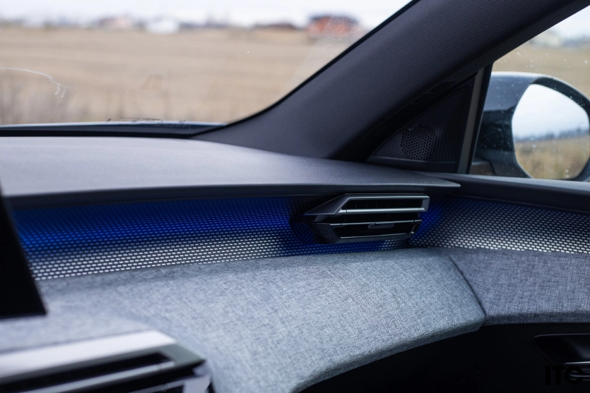
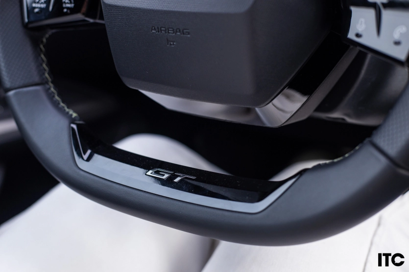
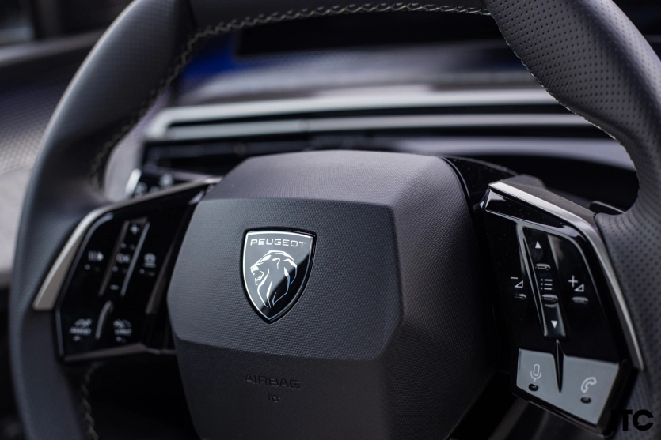
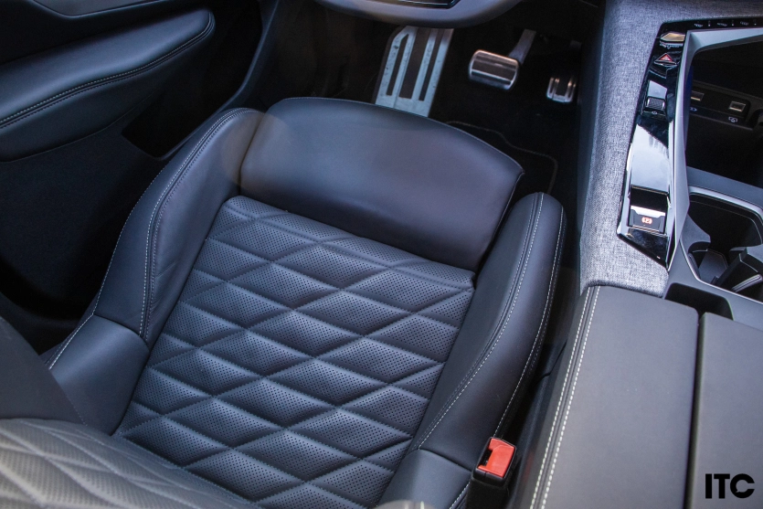
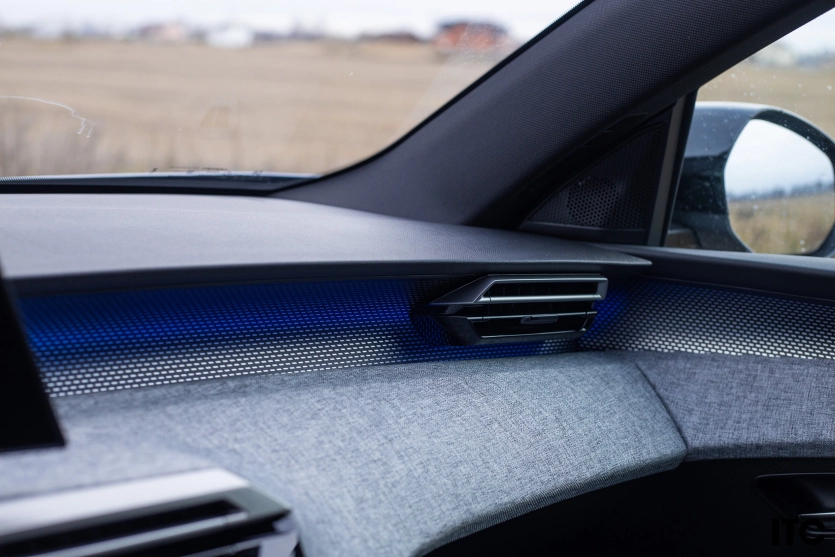
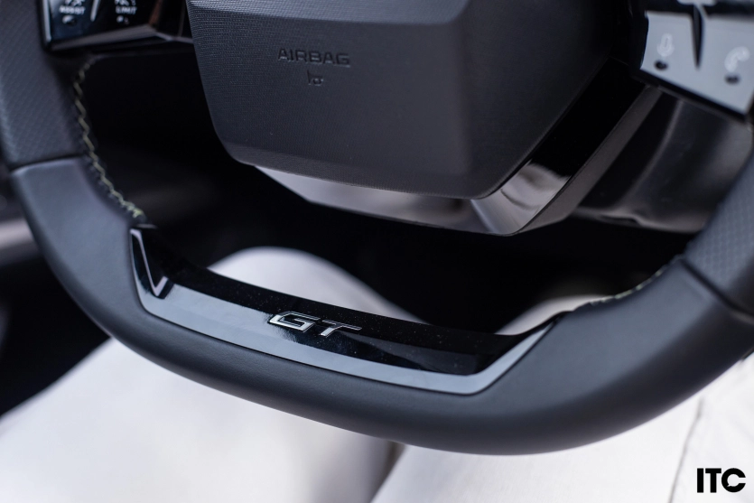
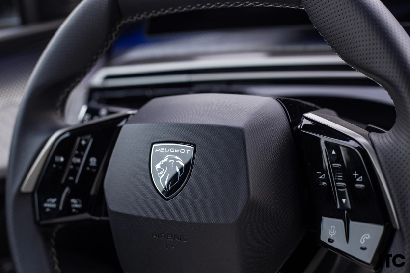
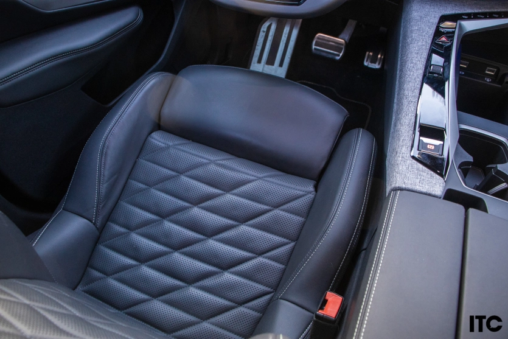
Матеріали в GT – окремий вид тактильного задоволення. Алькантара Greval Grey на дверних картах і торпедо — це так затишно, що хочеться торкатися її постійно. Ніякого дешевого глянсового пластику, який збирає відбитки пальців, як у корейців. Тут все матове, шляхетне. А тепер тут і фірмова додаткова сенсорна панель з персональними налаштуваннями іконок під екраном. Пару кліків і завжди всі бажані функції під рукою від масажу в кріслах, підігрівів та вентиляції сидінь і керма, трьохзонного клімату, підігріву лобового скла і до навігації, яка тут синхронізована з Waze. Так дійсно, штатна навігація показує пробки та камери автофіксації прямо на приладовій панелі. Жодного шансу вляпатись в неприємності.
Єдина ложка дьогтю в цій бочці меду – управління кліматом через екран. Коли ти на швидкості 100 км/год намагаєшся потрапити пальцем у сенсорну кнопку температури, хочеться передати “привіт” ергономістам. І ще один за дрібні іконки на екрані Apple CarPlay, який тут бездротовий, звичайно. Але, чесно кажучи, в режимі Auto клімат працює так коректно, що я туди майже не лазила, а налаштування бездротового підключення і так досить персоналізоване.
 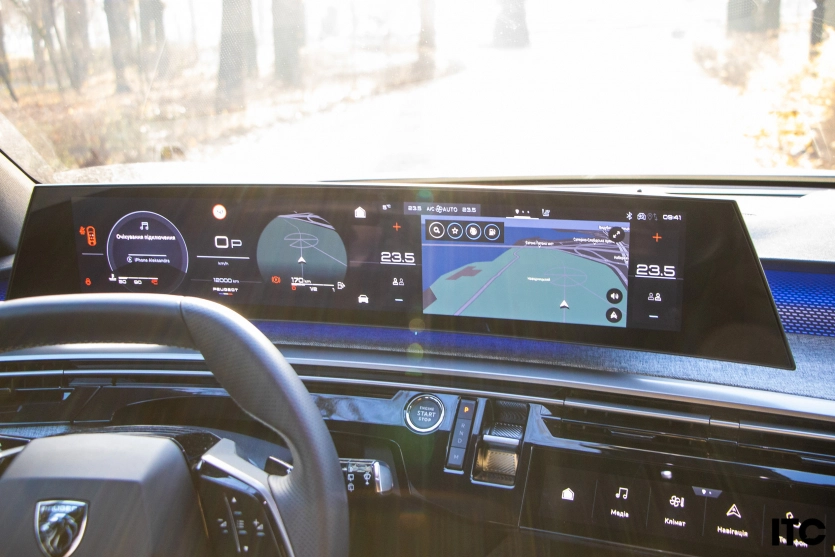
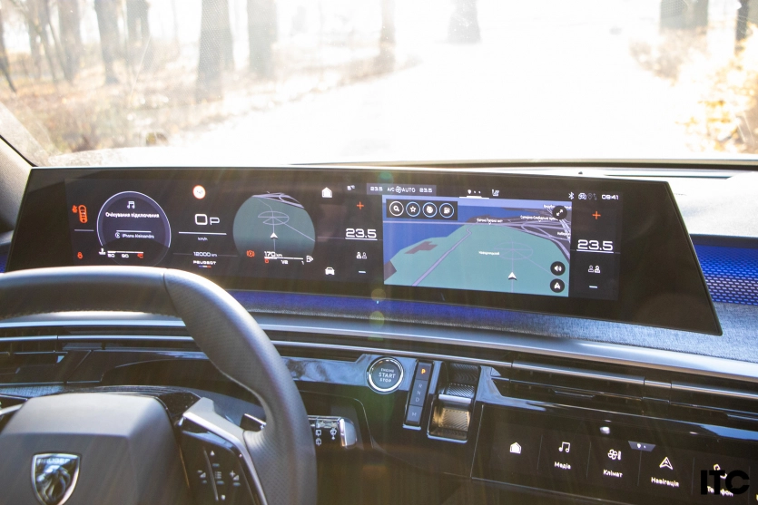
Загалом у французів загальний вигляд важливіше за функціонал чи ергономіку. Здається, про яку зручність може йти мова, коли велика ємність для зберігання на центральному тунелі ховається від водія, але задум глибший ніж здається на перший погляд. Бо сховати там всякі дрібниці дуже зручно, наприклад, кабелі підключення смартфонів. Для водія – бездротова зарядка така, щоб зайвий раз не чіпав телефон в принципі.
Зате алгоритми зрозумілі, користування легке, приємне, відгук краще ніж раніше, а приладова панель просто гігантська з широкою гамою налаштувань. Звичайно на кермі можна керувати круїзом або лімітом швидкості, музикою, функціонал також віддано і торцевим клавішам у важелях поворотників та склоочисників.
 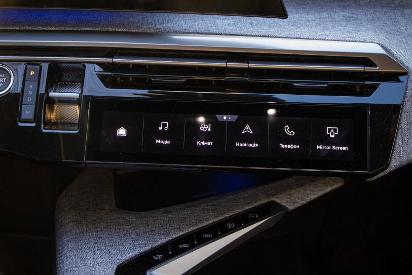
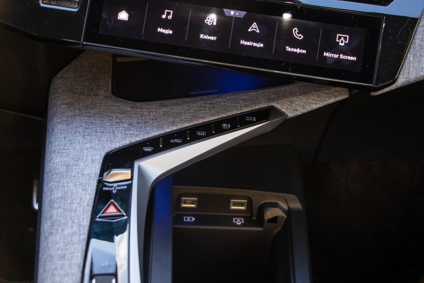
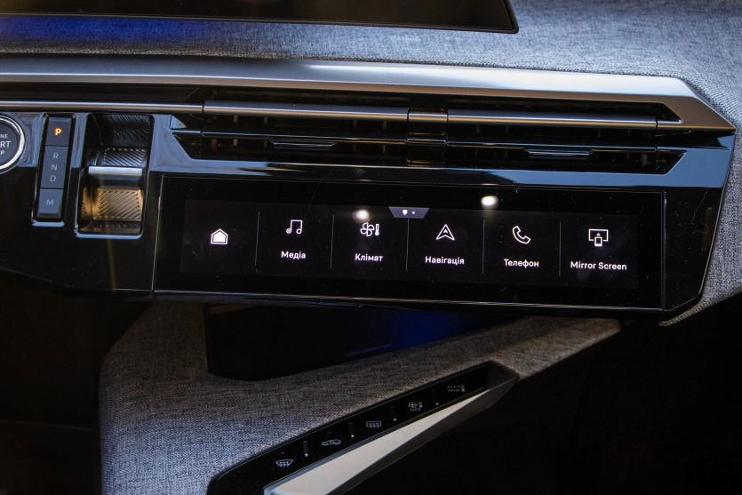
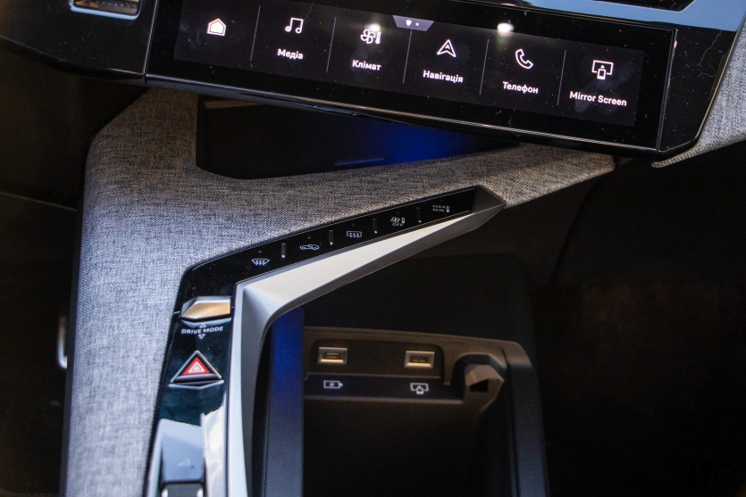
Хтось може нарікати й на незручність розташування коробки передач у вигляді звичайної клацалки прямо на торпедо, до якої іноді потрібно реально тягнутись, та і перевіряти чи справді потрапив на необхідну передачу. Така реальність сучасних трендів, де вау-ефект важливіший за практичність. Звикаєш насправді до всього.
Однак ця вечірня підсвітка та створена дизайнерами атмосфера не може не зачаровувати. затишок, який має цей сімейний трьохрядний кросовер не передати ані словами, ані зображеннями. Його потрібно відчути. Добре що з шумкою працюють з покоління в покоління і тут вона майже ідеальна, ще б вентилятор пічки не так гучно працював, бо заколисує іноді в дорозі, якщо не вмикати музику. А ось акустика пропрацьована непогано і звучанням навіть можна насолоджуватись.
Стара добра технічна складова
Цікаво, що цей масивний кросовер не тільки вміщує всю компанію подруг, а ще і рулиться кайфово. Чоловіки точно оцінять. Тим паче, що за кермом взагалі забуваєш про довгий хвіст позаду. Головне не захоплюватись і не влаштовувати динамічні маневрування.
І добре, що двигун Peugeot 5008 має в запасі лише 180 к.с. Адже тут старий та вірний 1.6 PureTech в парі з впевненим 6-ступеневим гідротрансформатором. Однак не варто сильно розчаровуватись у цифрах. Все це означає, що у вас під правою ногою завжди є запас. Така кількість “конячок” для сімейного кросовера – це золота середина. Розгін до сотні за 9.1 секунди. Це не спорткар, але зі світлофора ви поїдете впевнено, залишивши позаду більшість потоку. Правда витрата стрибатиме більше 10 літрів.
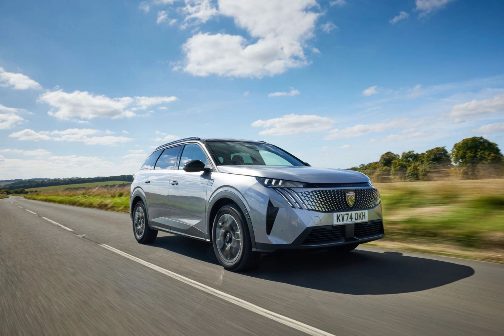І за цей підривний характер відповідає головна зірка – коробка передач. Це 6-ступеневий автомат Aisin (EAT6). І це, мабуть, найкраще, що могло статися з цією машиною і з усіма майбутніми власниками, як в плані поведінки, так і в плані надійності.
Якщо подивитись на конкурентів, то у Skoda Kodiaq – робот DSG. Він класний на трасі, але в київських заторах він і досі смикається, плутається в передачах і змушує вас нервувати. Nissan X-Trail часто йде з варіатором, який гуде, як пилосос, коли ви тиснете на газ, якщо не брати гібрид, звичайно – там як такої коробки взагалі немає. Навіть Mazda CX60 вже відмовилась від гідротрансформатора запропонувавши досить дивну конструкцію з багатодисковою муфтою і стартер-генератором в mHev версії (тобто особливою версією DCT).
А тут? Гідротрансформатор. Він м’який, як вершкове масло. Перемикань не відчуваєш взагалі. У заторах машина повзе плавно, без ривків. Це і є справжній комфорт преміум-класу. Реагує миттєво та чутливо. І буде економно себе поводити в рамках 8 літрів, якщо не сильно відкривати дросель.
Це плата за динаміку бензинового турбомотора. Якщо хочете економити — беріть мʼякий гібрид, він теж є в лінійці, але бензиновий двигун працює набагато ефективніше і надійніше. На холостих його в салоні взагалі не чути. А головне виходить значно більше за трициліндровий моторчик, хоча і там вже попрацювали над надійністю і навіть встановили ланцюг в привід ГРМ.
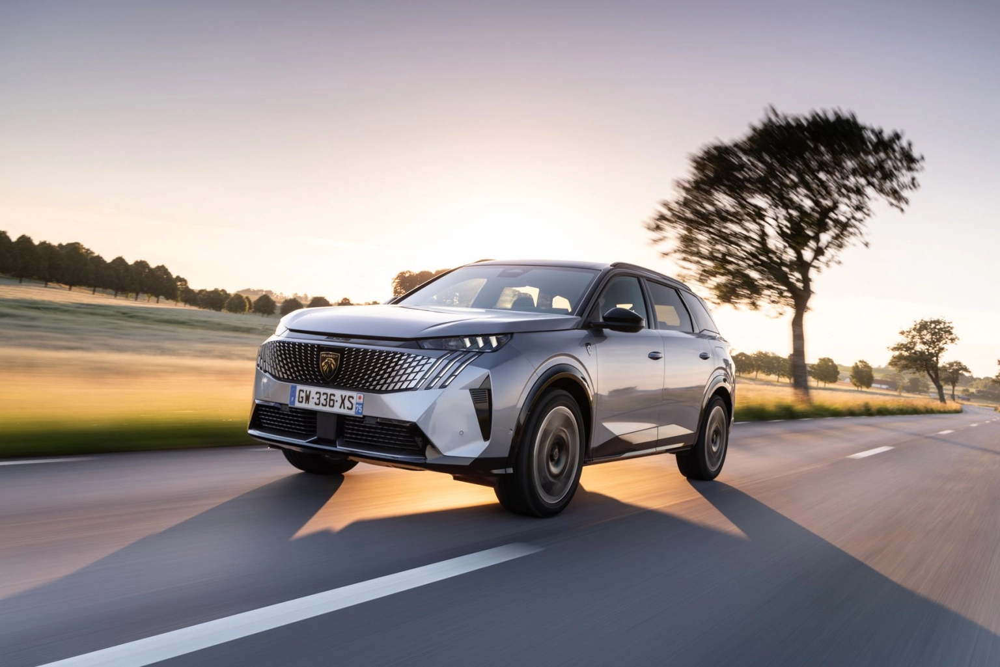Платформа EMP2, на якій побудований 5008, – це інженерний шедевр. Попри те, що це довгий 7-місний “автобус”, керується він азартно. Маленьке кермо робить свою справу – реакції гострі. Ти повертаєш, і машина пірнає в поворот без зайвих кренів.
Але є нюанс, про який мовчать у рекламних буклетах. Задня підвіска тут – напівзалежна балка. Це надійно (там просто нічому ламатися), але… Якщо їдеш сама максимум вдвох – все ідеально. Але якщо ззаду сидять пасажири, то на “лежачих поліцейських” або гострих ямах їх може трохи трусити жорсткіше, ніж у тій самій Skoda Kodiaq, де стоїть багатоважільна підвіска. Проте на рівному асфальті Peugeot 5008 пливе, наче корабель. Все на користь керованості та полегшенню конструкції, бо в електромобіль, що будували на тій самій платформі, буде трохи незручно пхати важку багаторичажку.
ПЛЮСИ: дизайн, надійність, активні помічники, функціонал, комфорт, місткість. МІНУСИ: камери кругового огляду могли б бути краще, динаміка посередня.
Технічні характеристики Peugeot 5008 1.6 PureTech 6AT GT
| Кузов, тип | універсал, SUV |
|---|---|
| Габарити (ДхШхВ), мм | 4791/1895/1694 |
| Колісна база, мм | 2901 |
| Заявлений кліренс, мм | 150 |
| Об’єм багажника, л. | 348/916/2232 |
| Споряджена маса, кг | 1759 |
| Двигун | 1598 |
| Потужність, к.с., Нм/об | 180 (5500 об) |
| Крутний момент, Нм/об | 300/2000 |
| Тип приводу | передній |
| Підвіска перед. | Незалежна типу Макферсон |
| КПП | 6АТ |
| Динаміка 0-100, с | 9,1 |
| Максимальна швидкість, км/год | 215 |
| Споживання палива, л (змішаний) | 7,9 |
| Вартість, від грн | 1 463 600 |
| Вартість тестового авто, грн | 1 698 200 |
| Конкуренти | Skoda Kodiaq, Nissan X-Trail, Hyundai Santa Fe, Mazda CX60/CX90, Toyota Highlander |